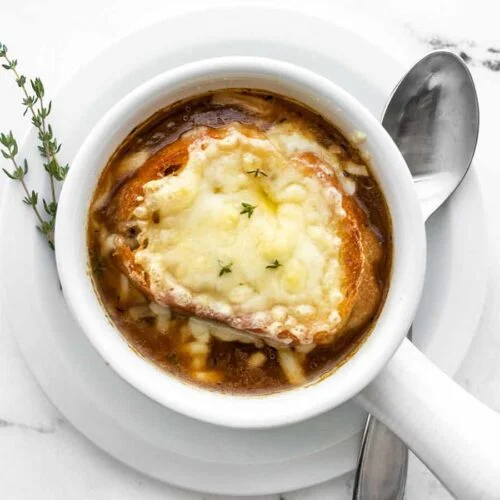

French Onion Soup

Description
This decadent yet simple soup makes for the perfect savory side dish
on a chilly winter night or any other time of year. This easy-and-affordable
recipe will transform simple onions and beef stock into something else all together.
Check out the recipe below for the perfect way to up your soup game!
Ingredients
Soup
- 4 Large Yellow Onions (approximately 6 lbs)
- 2 Quarts of Beef Stock
- 4 Cloves of Garlic, Minced
- 1/2 cup White Wine
- 4 tbs. Extra Virgin Olive Oil
- 2 tbs. Unsalted Butter
- 1 1/2 tsp. Kosher Salt
- 1/2 tsp. Black Pepper
Cheese Toast
- Loaf of French Bread
- 1 cup Gruyère Cheese, Shredded
Steps
- Thinly slice onions from root to stem. Place them in a preheated pan with
4 tbs. of extra virgin olive oil.
- Saute until onions have caramelized. (They are caramelized when
they have substantially reduce in size and turned a deep golden color.)
- Add garlic, salt, pepper, and butter to the onions and cook until fragrant.
(About 2 minutes.)
- Deglaze the pan using white wine then add the beef stock.
- Bring the mixture to a boil then reduce the heat to low and simmer for
45 minutes.
- While soup is cooking, preheat the oven to 450°. After the soup has been
simmering for 45 minutes, place 4 slices of french bread on the top rack of
the oven and cook until golden brown on both sides.
- After the bread is toasted, top one side of each slice with gruyère cheese
and toast until the cheese is melted.
- Portion out four bowls of soup and top each one with a slice of toast. Serve
immediately.